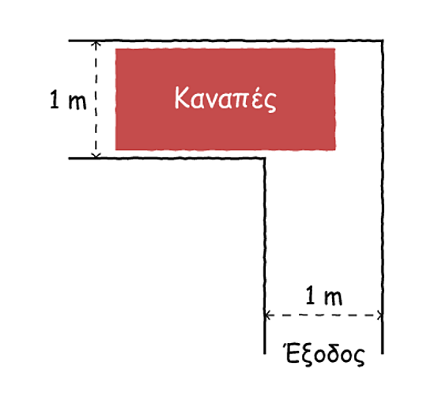
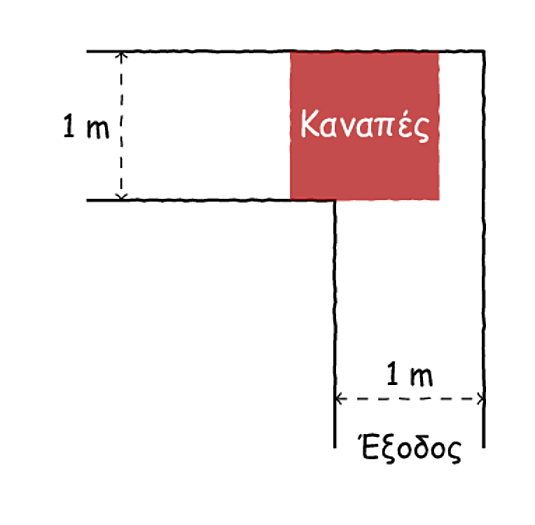
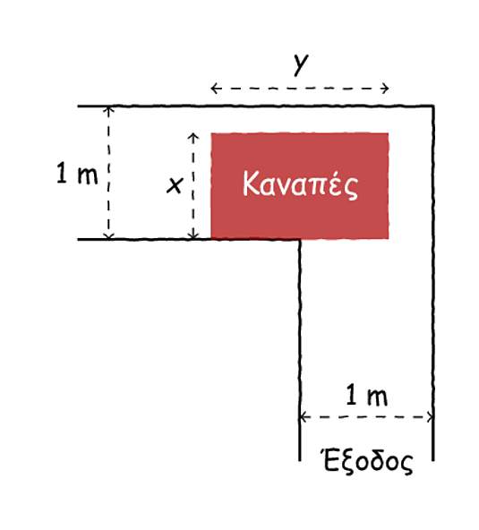
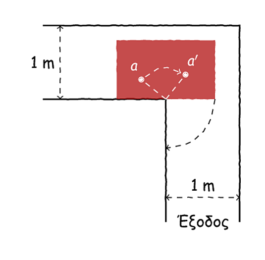
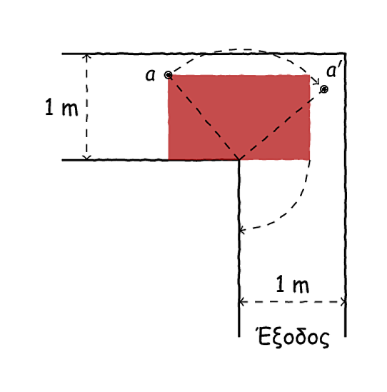
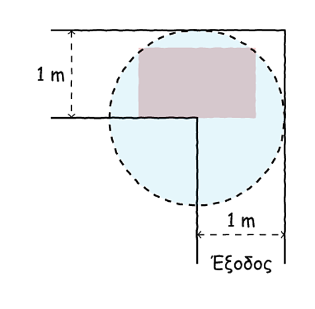
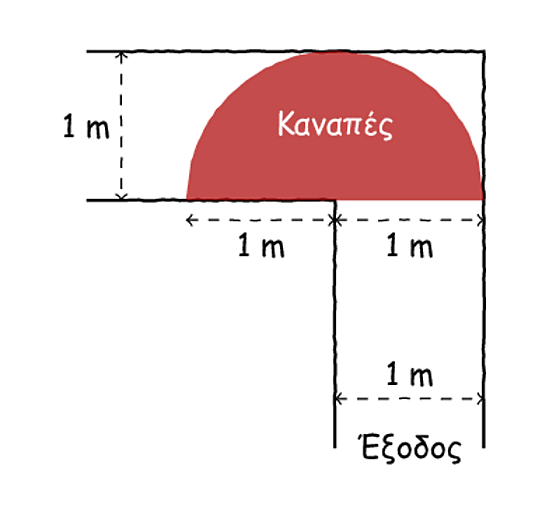
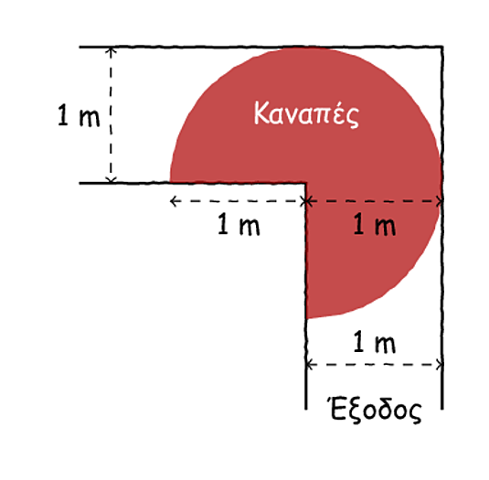
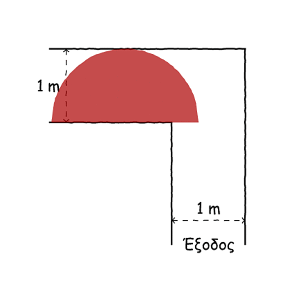

Όλη η Αλήθεια για τον Καναπέ σας…#

Έχετε ποτέ συναναστραφεί κάποιον από αυτούς τους γραφικούς τύπους που λένε ότι όλα σε αυτή τη ζωή είναι μαθηματικά, ότι πίσω από τα πάντα βρίσκονται οι αριθμοί και άλλα τέτοια ωραία, και που αυθόρμητα θέλετε να τους αποκαλέσετε «νούμερα», με λοιπούς κοσμητικούς χαρακτηρισμούς να έπονται βροχηδόν; Ε, φανταστείτε ότι το σημερινό άρθρο το γράφει ένας τέτοιος τύπος, γιατί η πρόθεσή μας είναι να μην καθίσετε στον καναπέ σας ποτέ ξανά όπως καθόσαστε ως τώρα…
Αποδομώντας έναν Καναπέ#
Τους καναπέδες ο κόσμος τους συνδυάζει με πολλά πράγματα: τους ψυχολόγους, το Champions League, το διάβασμα, τον ύπνο, το διαζύγιο. Σίγουρα, όμως, οι καναπέδες δεν είναι συνυφασμένοι με τα μαθηματικά. Ή, τουλάχιστον, έτσι θέλουμε να πιστεύουμε. Διότι, κάτω από τον καναπέ σας κρύβεται ένα μαθηματικό τερατάκι και μόνο αν τον σηκώσετε θα μπορέσετε να το δείτε.
[Συνεργείο μεταφορικής μπαίνει στη σκηνή]
[Υπάλληλος μεταφορικής] Εμπρός, σηκωθείτε! Τι μας κοιτάτε; Είπαμε, τον καναπέ τον παίρνουμε σήμερα.
[Αφηγητής] Μα, πού τον πάτε, έχω δουλειά, δε βλέπετε; Γράφω τώρα…
[Υ] Τι μας νοιάζει, κύριέ μου, φεύγουμε, λέμε. Το είπατε κι εσείς, ο καναπές πρέπει να σηκωθεί.
[Α] Συγγραφική αδεία, κύριέ μου, αφήστε με τώρα να ολοκλ… [Διακόπτεται απότομα, δύο υπάλληλοι τον σηκώνουν από τις μασχάλες]
[Α] Πού με πάτε;! Αφήστε με είπα!
[Υ] Φεύγουμε τώρα, έχουμε κι άλλες δουλειές μετά, κύριέ μου, λέμε!
[Α] [Ισιώνοντας το ρούχο του] Καλά, πάρʹτε τον, δε θα πάτε μακριά άλλωστε…
Λίγο μετά, οι υπάλληλοι βρίσκονται αντιμέτωποι με την παρακάτω κατάσταση:

Η κάτοψη της εξόδου του σπιτιού.#
Και πώς τον περνάμε από εδώ τον καναπέ; Είναι σαφές ότι ο καναπές δεν μπορεί να στρίψει τόσο πλατύς που είναι. Για την ακρίβεια, είναι απορίας άξιο πώς αυτός ο καναπές μπήκε στο σπίτι - μπορείτε να φανταστείτε, άραγε;
Έχοντας την πικρή γεύση της ήττας στο στόμα τους, τα μέλη του συνεργείου αφήνουν κάτω τον καναπέ και κάθονται πάνω του, βυθισμένα στα αναπαυτικά μαξιλάρια του και τις σκέψεις τους:
[Υπάλληλος 1] Δε μου λες, ρε συ, τώρα εμείς τι κάνουμε μʹ αυτόν εδώ;
[Υ2] Σσσσς! Σε ακούει, ρε, μη μιλάς έτσι!
[Υ1] Τον καναπέ λέω, ρε ανόητε! [Φάπα στον Υ2] Τι θα τον κάνουμε τώρα;
[Υ3] Κοίτα να δεις! Ο μπάρμπας μας την έφερε ξεκάθαρα… Προφανώς, ήξερε τι θέμα υπάρχει και αντί να μας πει να έρθουμε με γερανό, μας έφερε έτσι.
[Υ1] Εγώ να σου πω τι σκέφτομαι; Γιατί τους σχεδιάζουν έτσι τους καναπέδες; Δεν ξέρεις, όταν πας και σχεδιάζεις ένα έπιπλο, ότι ο κόσμος το πάει πέρα-δώθε; Δεν ξέρεις ότι μετακομίζουν οι άνθρωποι;
[Υ3] Προφανώς, θα έπρεπε να λαμβάνει κανείς υπόψιν του τέτοιες λεπτομέρειες. Διότι, πόσα και πόσα σπίτια δεν έχουμε δει με τέτοιες γωνίες…
[Υ1] Είναι όντως πολύ κλασική περίπτωση. Ειδικά στην είσοδο του διαμερίσματος, το βλέπεις συχνά.
[Υ3] Δε θυμάσαι, ρε, στην άλλη τη μονοκατοικία στη Βούλα, που δεν μπορούσαμε να περάσουμε το τραπέζι της κουζίνας με τίποτα; Αίμα φτύσαμε!
[Υ1] Εγώ δε θυμάμαι; Ή το άλλο…
[Υ2] Ρε σεις, μήπως λύνεται ο καναπές; Να τον περάσουμε έτσι;
[Υ1,Υ3] Άσε μας τώρα κι εσύ, έχουμε κουβέντα.
[Υ1] Λοιπόν, εδώ που τα λέμε, ίσως πρέπει να το δούμε πιο σοβαρά αυτό με τα σχέδια των καναπέδων. Σου λέω εγώ τώρα, πες ότι έχεις μία γωνία, καλή ώρα, ένα μέτρο πλάτος. Ο καναπές που έχουμε εμείς δε χωράει, σωστά;
[Υ3] Σωστά.
[Υ1] Σου λέω εγώ, είσαι και από αυτούς τους ντιζάινερς, που σχεδιάζουν τα έπιπλα τα μοντέρνα κι έτσι. Ωραία;
[Υ3] Ωραία.
[Υ1] Και τι ρόλο βαράει ο καναπές σʹ ένα σπίτι;
[Υ2] Να κάθεται ο κόσμος, τώρα αυτά θα λέμε;
[Υ1] Α, μπράβο σου. Να κάθεται ο κόσμος. Άρα ο καναπές θέλει την άπλα του, σωστά;
[Υ3] Σωστά.
[Υ1] Και σου λέω εγώ, τώρα. Εσύ, ο «ντιζάινερ», σκέφτεσαι: Ποιος είναι ο μεγαλύτερος δυνατός καναπές που μπορεί να περάσει από μία τέτοια γωνία;
[Υ2] Έλα ρε σεις, τώρα, καθόμαστε κι ακούμε τον άλλον. Να, θα σου σχεδιάσω εγώ έναν καναπέ τώρα που περνάει από όλες τις γωνίες.
Ένας Άβολος Καναπές#
Ας ρίξουμε μια ματιά στον καναπέ του παρακάτω σχήματος:

Τετράγωνη λογική…#
Θα πείτε τώρα «Καλά, τετράγωνος καναπές;» και θα έχετε ένα κάποιο δίκιο. Αλλά, στην προκειμένη βολεύει. Διότι, αυτός ο καναπές, αν και κατά τι άβολος, μπορεί να περάσει με περισσή άνεση τη γωνία του σπιτιού και να βγει στον έξω κόσμο - εντάξει, με την απαραίτητη βοήθεια. Είναι εύκολο να δει κανείς ότι το εμβαδό αυτού του καναπέ είναι ίσο με ένα τετραγωνικό μέτρο, οπότε είναι η κατάλληλη στιγμή για να τεθεί ένα διαχρονικό επιστημονικό ερώτημα: Μπορούμε καλύτερα;
[Υ3] Έλα, μωρέ, τον αφήσατε πάλι να μιλάει λες και ξέρει αυτός από μετακομίσεις.
[Υ2] Μου φαίνεται σε κόλλησε ο άλλος κι εσένα.
[Υ1] Τι με κόλλησε, μωρέ; Τον άφησες μόνο του και σου πρότεινε να φτιάξεις έναν τετράγωνο καναπέ [Φάπα στον Υ2]. Καλά του λέει.
[Υ2] Εγώ δεν τη βρίσκω και τόσο άσχημη την ιδέα του μπάρμπα πάντως.
[Υ1] Μπα, σʹαρέσει η κουβέντα κι εσένα τώρα;
[Υ2] Γιατί, υπάρχει πρόβλημα;
[Υ1] Όχι, λέω, μήπως…
[Υ2] Άκου εδώ, τώρα! Λοιπόν, οι γωνίες, όπως όλοι ξέρουμε, είναι για να στρίβουμε, να αλλάζουμε κατεύθυνση, πώς το λένε.
[Υ3] Σαΐνι ο δικός σου… [δείχνει περιπαικτικά τον Υ2]
[Υ1] [Χαζογελώντας] Ναι, δεν τον είδες;
[Υ2] Σους! Λοιπόν, ο καναπές αυτός εδώ που είναι τετράγωνος δε στρίβει, δηλαδή δεν εκμεταλλεύεται το σχήμα της γωνίας. Οπότε, σίγουρα θα μπορούμε να φτιάξουμε και μεγαλύτερους καναπέδες που να περνάνε από τη γωνία, αρκεί κάπως να τους στρίψουμε. Να, για παράδειγμα, μπορούμε να κοντύνουμε λίγο τον καναπέ και να τον πλατύνουμε. Έτσι, μάλλον, θα χωράει να στρίψει από τη γωνία:

Ένας πιο μαζεμένος καναπές.#
[Υ1] Αυτός δε χωράει να στρίψει, ρε! Εγώ φταίω που κάθομαι και σʹ ακούω, ρε, δε φταίει κανʹας άλλος…
[Υ2] Ρε, μην είσαι στενόμυαλος! Άμα τον μαζέψεις αρκετά και τον απλώσεις όσο πρέπει, βγαίνει.
[Υ1] Ναι, άμα τον κάνεις μισό από τον άλλο στρίβει κιόλας. Κοίτα εδώ μια διάνοια…
[Υ2] Ρε, κερδίζεις άμα τα μαγειρέψεις καλά, απλά πρέπει να το ψάξουμε λίγο, μην είσαι ξεροκέφαλος, λέμε.
[Υ3] Ειρήνη υμίν, παιδιά. Νομίζω βρήκα τι παίζει με αυτό που λέτε.

Μικρές στροφές…#
[Υ1] [Σιγοτραγουδώντας] Κι όπως θα παίιιιιρνω τις στροφέεεεες…
[Υ2] Κάτσε να μας πει, ρε!
[Υ3] Λοιπόν, πες ότι κάθεσαι σε ένα σημείο του καναπέ, πες το \(a,\) να, εδώ [δείχνει το σημείο \(a\) στο σχήμα]. Αν πας και τον κεντράρεις στη γωνία τον καναπέ για να τον στρίψεις, αυτό το σημείο θα στρίψει 90 μοίρες, όπως και όλος ο καναπές, ωραία;
[Υ1,Υ2] Ωραία, ναι…
[Υ3] Ωραία, οπότε αυτό το σημείο θα καταλήξει εδώ [δείχνει στο \(aʹ\) ]. Γενικά, κάθε σημείο του καναπέ θα εκτελέσει μία περιστροφή κατά 90 μοίρες με τη φορά των δεικτών του ρολογιού.
[Υ2] Α, άρα έχουμε θέμα με τον καναπέ που έχουμε σχεδιάσει.
[Υ1] Εσύ τον σχεδίασες…
[Υ2] Έστω, με τον καναπέ που εγώ σχεδίασα. Γιατί, να, δες εδώ:

Ωχ, πέσαμε έξω…#
[Υ1] Εντάξει, θα φάμε λίγο τον τοίχο, δε θα το πάρει χαμπάρι ο άλλος.
[Υ2] [Ειρωνικά] Χα, χα, χα, ας γελάσουμε…
[Υ3] Εντάξει, σταματήστε! Λοιπόν, ακριβώς αυτό είναι το θέμα, κάποια σημεία, καθώς στρίβει ο καναπές, θα πρέπει να βρεθούν «πίσω» από τους τοίχους. Γενικότερα, αν πάρουμε έναν καναπέ και πάμε να τον στρίψουμε γύρω από τη γωνία τότε πρέπει κάθε στιγμή όλος ο καναπές να βρίσκεται εδώ μέσα [διαγράφει με το δάχτυλό του τη γαλάζια περιοχή]:

Ο κύκλος των χαμένων… καναπών (;)#
[Υ2] Έλα, για λίγο το έχασα, κόβει το μάτι μου, δε μπορείτε να πείτε!
[Υ3] Ναι, καμάρωνε εσύ… Δε βλέπεις πόσο μικρός είναι ο καναπές που σχεδίασες; Εδώ έχουμε χώρο να κάνουμε παιχνίδι, δε βλέπεις;
[Υ1] Εγώ, το πιο μεγάλο που μπορώ να σκεφτώ είναι αυτό εδώ [δείχνει το ημικύκλιο]:

Ένας μεγάλος στρογγυλός καναπές.#
[Υ2] Και ποιος θα κάτσει σʹ αυτό το πράγμα;
[Υ3] Κάτσε λίγο να μας πει…
[Υ1] Λοιπόν, αυτός είναι ένας καναπές, μισός κύκλος, με ακτίνα ένα μέτρο. Όπως ξέρετε, το εμβαδό του είναι: \(\pi\rho^2/2=\pi/2\approx 1.57.\) Επομένως, είναι 57% μεγαλύτερος από τον καναπέ που προτείνατε πριν, χαϊβάνια μου.
[Υ3] Όχι και «προτείναμε»! Ο άλλος το είπε, όχι εγώ.
[Υ1] Έστω…
[Υ2] Καλά, και δε μπορούμε να βάλουμε λίγο ακόμα από κάτω δεξιά, εδώ στο κενό;

Μήπως δε χωράει;#
[Υ3] Και πώς θα στρίβει, ρε συ;
[Υ2] Εεεε… Ααααα, ναι… Σωστά.
[Υ1] Τα βλέπετε; Είναι ο πιο μεγάλος που χωράει στη γωνία, γιατί δεν μπορούμε να προσθέσουμε κάτι από την άλλη μεριά αλλά ούτε κι έξω από τον κύκλο που είπε πριν ο άλλος. Γιατί μετά δε θα χωράει να στρίψει. Οπότε, ο μεγαλύτερος καναπές που μπορούμε να περάσουμε είναι αυτός εδώ, μάγκες. 1.57 τετραγωνικά μέτρα, δεν το λες και άσχημο!
[Υ2] Και πώς κάθεσαι σε έναν καναπέ - ημικύκλιο;
[Υ3] Γιατί, εσύ θα κάθεσαι;
[Υ1] [Χαζογελώντας] Και, για να μη λέτε, να πώς παίρνει τις στροφές ο καναπές:

Ένας καναπές που ταξιδεύει μοναχός…#
[Υ2] Ωραία, το λύσαμε, πάρε τώρα να μας φέρουν γερανό γιατί αυτός δεν περνάει από τη γωνία.
Δε Γίνεται Καλύτερα;#
Ωραία, τώρα που φύγανε ευκαιρία να τα πούμε λίγο πιο ήσυχα. Ο παραπάνω ημικυκλικός καναπές, πράγματι, χωράει να περάσει από τη γωνία στρίβοντας και περνάει και μια χαρά, μάλιστα. Εντούτοις, πού ξέρουμε ότι δεν μπορούμε να κατασκευάσουμε έναν καναπέ μεγαλύτερο από αυτόν που να χωράει να στρίψει στη γωνία; Μπορούμε, άραγε, να αποδείξουμε ότι αυτή είναι η βέλτιστη λύση; Πώς θα ξεκινούσε μία τέτοια απόδειξη;
Πολλές οι ερωτήσεις, λίγες οι απαντήσεις, ως τώρα. Λοιπόν, όπως είδαμε και παραπάνω, σίγουρα αυτός ο ημικυκλικός καναπές είναι ο μεγαλύτερος δυνατός αν πάμε να στρίψουμε τον καναπέ με τον συγκεκριμένο τρόπο που παρουσιάσαμε. Δηλαδή, σπρώχνουμε ώσπου να βρούμε τοίχο, και μετά αρχίζουμε να στρίβουμε μέχρι να ολοκληρώσουμε μία στροφή κατά μία ορθή γωνία. Τότε, αναγκαστικά πρέπει να βρισκόμαστε μέσα στον κύκλο που ζωγραφίσαμε παραπάνω. Ωστόσο, μήπως υπάρχουν κι άλλοι τρόποι να στρίψουμε;
Για παράδειγμα, μπορούμε να σπρώξουμε τον καναπέ, να τον στρίψουμε λίγο, μετά να τον ξανασπρώξουμε, να τον ξαναστρίψουμε κ.ο.κ., μέχρι να περάσει όλος από τη γωνία, όπως, για παράδειγμα, στο παρακάτω σχήμα:
Η κεντρική εικόνα είναι, φυσικά, Ο καναπές του Henri de Toulouse-Lautrec.
Καλό απομεσήμερο!